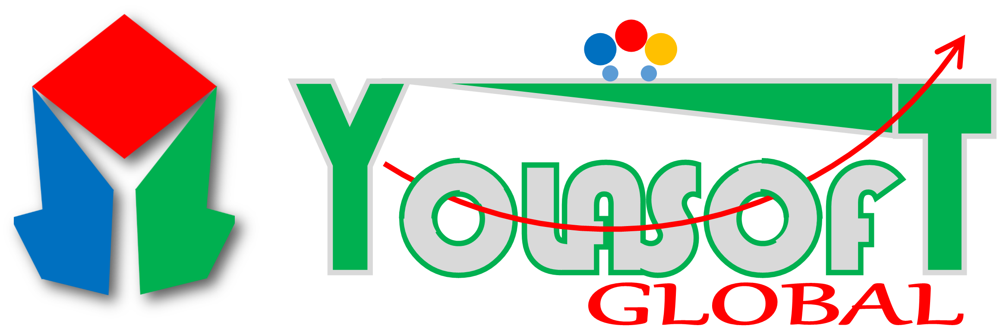
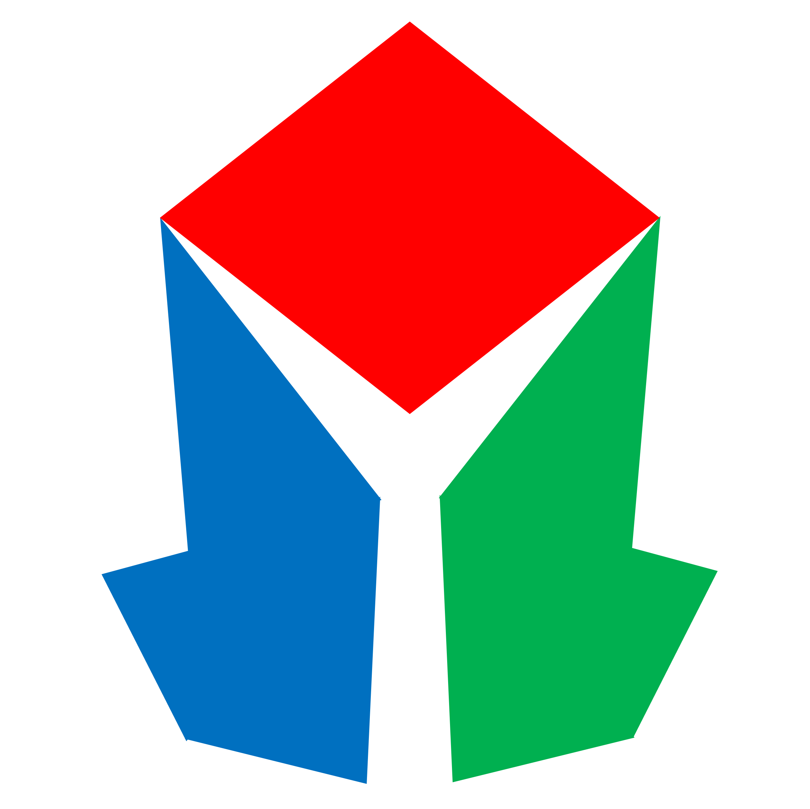

<div class="ys-container" [class.ys-is-mobile]="mobileQuery.matches">
  <mat-toolbar color="" class="ys-toolbar">
    <button mat-icon-button (click)="snav.toggle()">
      <mat-icon class="material-icons-sharp">menu</mat-icon>
    </button>
    <div class="d-sm-none d-md-block d-none logo">
      
    </div>
    <div class="d-sm-block d-md-none d-block logo-sm">
      
    </div>
    <!-- <h1 class="ys-app-name">Yolasoft SMS</h1> -->
    <div class="page-title">{{pageTitle}}</div>
    <div class="ys-spacer"></div>
    <button mat-icon-button>
      <mat-icon class="material-icons-sharp">settings</mat-icon>
    </button>
    <button mat-icon-button>
      <mat-icon class="material-icons-sharp">notifications</mat-icon>
    </button>
    <button mat-icon-button [matMenuTriggerFor]="beforeMenu">
      <div class="ys-user-pic-thumbnail">
        
      </div>
    </button>
    <mat-menu #beforeMenu="matMenu" xPosition="before">
      <button mat-menu-item>Item 1</button>
      <button mat-menu-item>Item 2</button>
    </mat-menu>
  </mat-toolbar>
  <mat-sidenav-container class="ys-sidenav-container" [style.marginTop.px]="mobileQuery.matches ? 56 : 0">
    <mat-sidenav #snav [mode]="mobileQuery.matches ? 'over' : 'side'" [fixedInViewport]="mobileQuery.matches"
      fixedTopGap="56">
      <mat-nav-list class="ys-nav-list">
        <a mat-list-item [routerLink]="['/dashboard']" class="nav-link active" id="homeLink">
          <mat-icon aria-hidden="false" aria-label="menu icon" class="material-icons-sharp">dashboard</mat-icon>
          <p>Dashboard</p>
        </a>
        <a mat-list-item [routerLink]="['/students']" class="nav-link" id="studentLink">
          <mat-icon aria-hidden="false" aria-label="menu icon" class="material-icons-sharp">school</mat-icon>
          <p>Student</p>
        </a>
        <a mat-list-item href="#" class="nav-link" id="studentLink">
          <mat-icon aria-hidden="false" aria-label="menu icon" class="material-icons-sharp">work</mat-icon>
          <p>Teacher</p>
        </a>
        <a mat-list-item href="#" class="nav-link" id="studentLink">
          <mat-icon aria-hidden="false" aria-label="menu icon" class="material-icons-sharp">assessment</mat-icon>
          <p>Examination</p>
        </a>
        <div class="ys-spacer"></div>
        <div id="footer">
          <div id="copyright">
            &copy; 2021 Yolasoft Global Ltd.
          </div>
        </div>
      </mat-nav-list>
    </mat-sidenav>
    <mat-sidenav-content class="px-3 bg-white">
      <router-outlet></router-outlet>
      <!-- <ysms-students></ysms-students> -->
    </mat-sidenav-content>
  </mat-sidenav-container>
</div>